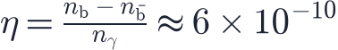
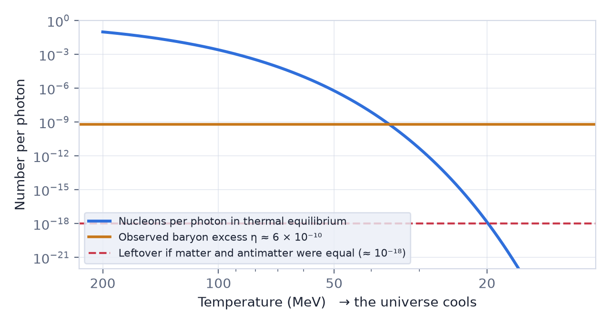

In this lesson you will learn
|
A universe of matter
Every particle has an antiparticle with the same mass and opposite charge: the electron has the positron, the proton the antiproton. When a particle meets its antiparticle they annihilate into energy. The laws of physics treat matter and antimatter almost identically, so a hot Big Bang should have made equal amounts of both.
Yet everything we see is made of matter.
- The Moon, planets and the Sun are matter; spacecraft landing on them would otherwise have been destroyed.
- Cosmic rays contain only a tiny fraction of antiprotons, consistent with their production in collisions, and no antihelium nuclei have been confirmed.
- If some galaxy clusters were made of antimatter, their boundaries with normal matter would glow in gamma rays from annihilation. No such signal is seen. Regions of antimatter, if they exist, must be at least as large as the observable universe.
How big is the excess?
The imbalance is measured by the baryon-to-photon ratio:

Two completely independent methods give the same value: the abundances of deuterium and helium from nucleosynthesis (lesson L4.3), and the pattern of the cosmic microwave background.
One in a billion In the very early universe, quarks and antiquarks were about as numerous as photons. For roughly every billion antiquarks there were a billion and one quarks. When the universe cooled, the pairs annihilated into photons. The single leftover quark out of every billion became all the matter in the universe, and the annihilation photons are still here as the CMB. |
Why the asymmetry cannot be an accident of cooling
Could equal amounts of matter and antimatter have survived simply because annihilation became too slow? The figure compares three numbers.

In thermal equilibrium the number of nucleons per photon (blue) falls steeply once
the temperature drops below their rest energy of about 940 MeV. With equal matter
and antimatter, protons and antiprotons would keep finding each other until only
about  per photon remained (red). That is about a billion times less
than the matter we observe (orange). An initial asymmetry is required.
per photon remained (red). That is about a billion times less
than the matter we observe (orange). An initial asymmetry is required.
Not just an initial condition One could simply assume the universe started with slightly more matter. But if cosmic inflation happened, it would have diluted any initial asymmetry to nothing. The asymmetry must have been created later by physical processes. This is called baryogenesis. |
Sakharov's three conditions
In 1967 the Soviet physicist Andrei Sakharov showed what any theory of baryogenesis needs. These are the Sakharov conditions:
- Baryon number violation. Some process must change the total number of baryons minus antibaryons. Otherwise the universe could never go from zero to a net excess.
- C and CP violation. The laws of physics must treat particles and antiparticles differently. CP violation means that the mirror image of a process with particles swapped for antiparticles does not happen at exactly the same rate.
- Departure from thermal equilibrium. In equilibrium every process runs equally fast in both directions, erasing any asymmetry. Something must happen quickly compared with the expansion, such as the decay of heavy particles or a sudden phase transition.
Does the Standard Model work?
Remarkably, the Standard Model of particle physics contains all three ingredients, but not in sufficient amounts:
| Condition | In the Standard Model | Enough? |
|---|---|---|
| Baryon number violation | Yes, through sphaleron processes at temperatures above ~100 GeV | Yes |
| CP violation | Yes, discovered in kaon decays in 1964 by Cronin and Fitch | No, far too small |
| Departure from equilibrium | Would need a violent electroweak phase transition | No: with the measured Higgs mass (125 GeV) the transition is smooth |
New physics is needed The observed matter excess is one of the strongest pieces of evidence that the Standard Model is incomplete. Something beyond known physics produced the matter we are made of. |
Candidate explanations
- Leptogenesis. Very heavy neutrinos, which could also explain why ordinary neutrinos have tiny masses, decayed slightly more often into leptons than antileptons. Sphaleron processes then converted part of this lepton excess into a baryon excess. This is currently one of the most popular ideas.
- Electroweak baryogenesis. New particles, such as additional Higgs bosons, could make the electroweak transition violent and add extra CP violation. The Large Hadron Collider tests this directly.
- Grand unified theories. Heavy bosons at extremely high energies might decay in a way that violates baryon number. Such theories also predict that the proton decays, which has not yet been observed (lifetime above years).
- Affleck–Dine mechanism. In some supersymmetric theories, scalar fields carrying baryon number evolve in the early universe and later decay into matter.
Experiments searching for the answer
- Neutrino experiments (T2K, NOvA, and the upcoming DUNE and Hyper-Kamiokande) are measuring CP violation among neutrinos, a key ingredient for leptogenesis.
- Electric dipole moment searches for electrons, neutrons and atoms are extremely sensitive to new sources of CP violation.
- Antimatter experiments at CERN compare antihydrogen and antiprotons with their matter counterparts. So far every measured property, from the antiproton's charge-to-mass ratio to the way antihydrogen falls under gravity, matches normal matter.
Remember this
|